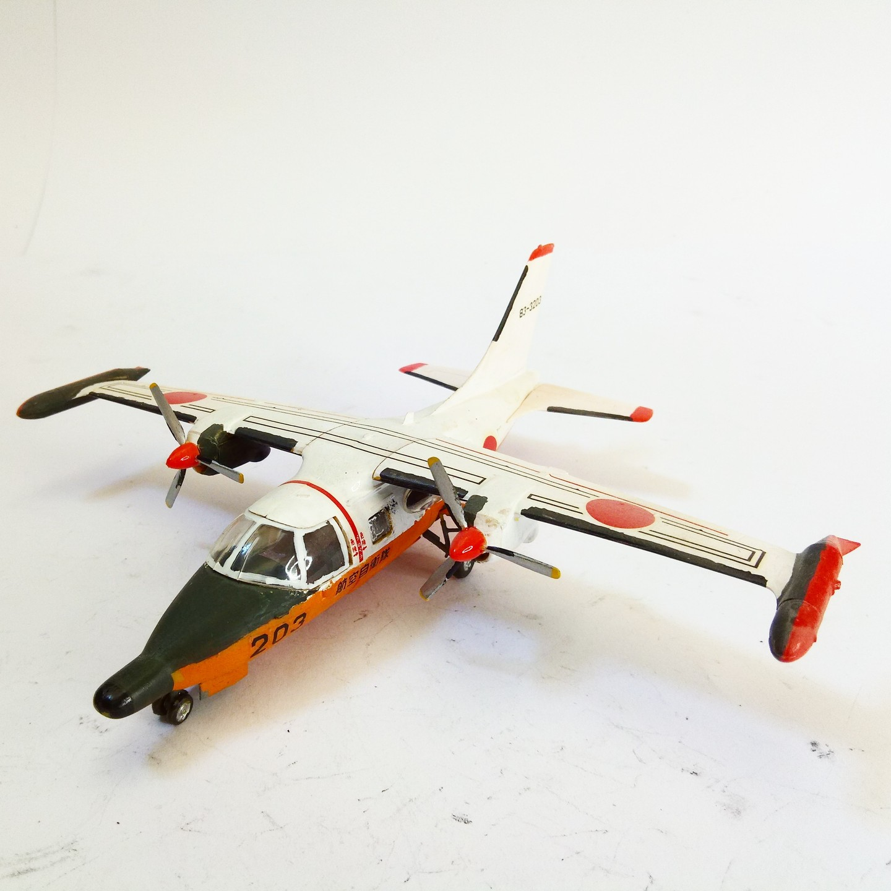
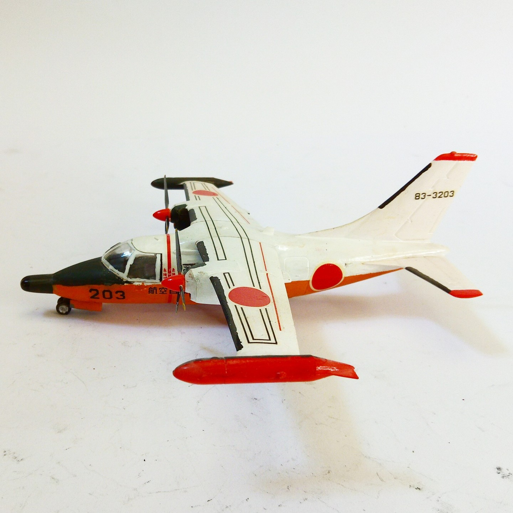

Aerei · scale model archive
Mitsubishi Mu2S
Mitsubishi Mu2S — Kit: Hasegawa. Sxale: 1/72 JASDF Rescue Training Sqn. 83-3203 Hamamatsu Minami, lovely livery #1/72 #Hasegawa

Photo gallery

English description
Sxale: 1/72
JASDF Rescue Training Sqn. 83-3203 Hamamatsu Minami, lovely livery
#1/72 #Hasegawa
Descrizione italiana
Livrea JASDF Rescue Training Sqn. 83-3203 Hamamatsu Minami, lovely.